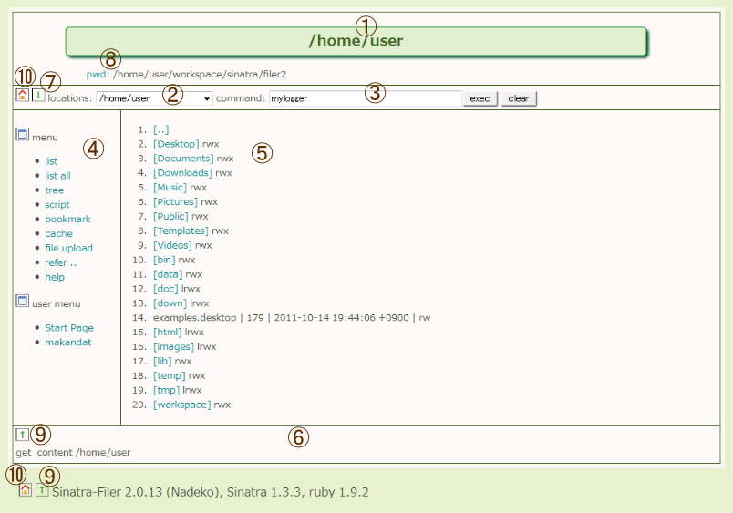
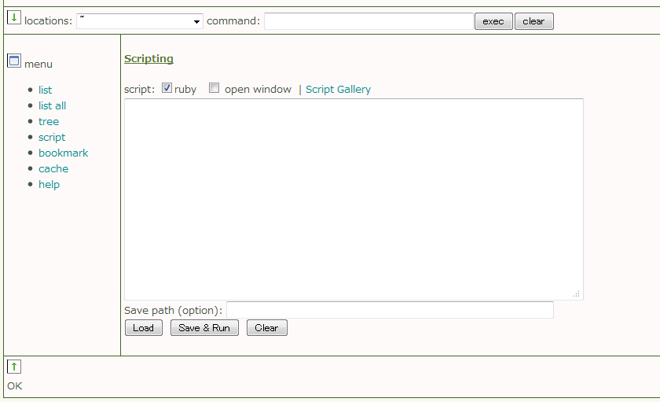
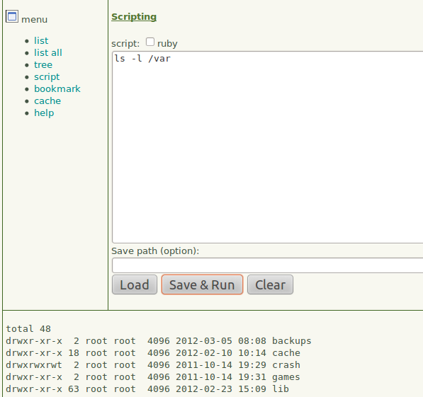
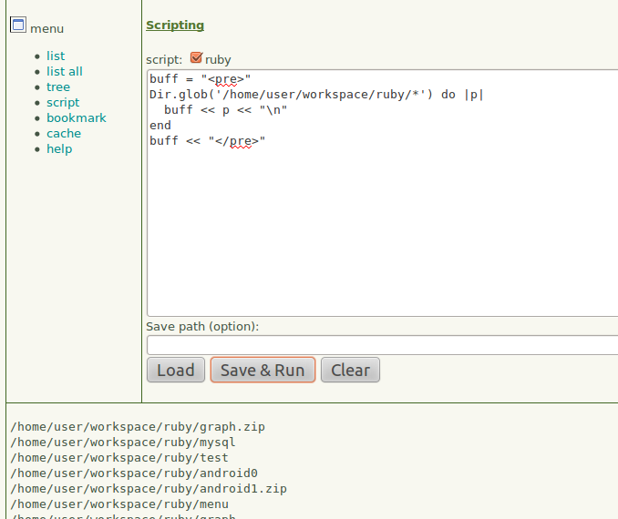

[close] [コマンド詳細] [スクリプト詳細] [メソッド詳細] [APIの詳細]

$ ruby main.rbとする。
| ファイル | 機能・内容 |
|---|---|
| main.rb | Sinatra filerのrubyソース |
| config.ini | 設定ファイル。項目は、title, stylesheet, html (HTML内容の表示方法. 'text'または'frame'), backup ('yes'ならファイル保存やアップロードの時、バックアップファイルを作成する) (Ver.2以上) sqlite3 に有効なSQLite3 データベース指定すると、ファイル情報を記録したり表示したりできる。 (Ver.2以上) ip に接続を許すIPアドレスを正規表現で設定する。ただし、127.0.0.1は常に許可する。省略したときは、192.168.0.0が許可される。 (Ver.2以上) start にスタートアップ時に表示するHTMLを設定すると、ディレクトリの内容一覧の代わりにそのHTMLの内容が表示される。このファイルはmain.rbと同じ場所に置いておくこと。 例 # config.ini |
| locations.ini | よく使う場所(フォルダ)を登録しておくファイル。ユーザが編集する。 |
| usermenu.html | ユーザ定義メニュー(option)。ユーザが編集する。HTML形式で定義する。 |
| (views/layout.erb) | (Ver 2.0では使用されません) 画面のテンプレート(共通部分)、JavaScriptのソースを含む。 |
| (views/index.erb) | (Ver 2.0では使用されません) メイン画面のテンプレート |
| public/favicon.ico | ブラウザのブックマークなどに表示されるアイコン |
| public/greentea.css | スタイルシート |
| public/help.html | このオンラインヘルプ・ファイル |
| public/command_help.html | コマンドヘルプ・ファイル |
| public/script_gallery.html | よく使うスクリプトを登録しておくHTMLファイル |
| public/img/ | 画像ファイル用フォルダ |
| public/js/jquery-1.6.1.min.js | Ajax JavaScriptライブラリファイル |
| public/js/base64.js | Base64 JavaScriptライブラリファイル |
create table info ( n integer not null primary key autoincrement, path text not null, info text not null, method text, icon text, dir integer not null default 0, bin integer not null default 0, `group` text, tstamp text );
<img src="img/window.png" alt="window"/> user menu
<ul>
<li><a href="javascript:getContent('~');">Start Page</a></li>
<li><a href="http://www.sinatrarb.com/" target="_blank">Sinatra</a></li>
<li><a href="http://ruby-doc.org/" target="_blank">ruby document</a></li>
</ul>
| 1 | n | 主キー |
| 2 | path | ファイルやディレクトリのフルパス名 |
| 3 | info | ファイルやディレクトリの情報 |
| 4 | method | ファイルやディレクトリに対する標準的な処理を行うrubyコード |
| 5 | icon | ファイルやディレクトリに対するアイコンや縮小画像のパス名またはデータ(Base64) |
| 6 | dir | ディレクトリ(1)かファイル(0)か？ |
| 7 | bin | バイナリーファイル(1)かテキストファイル(0)か？ |
| 8 | group | ファイルやディレクトリをグループ化するときのタグ |
| 9 | tstamp | 登録日時 |
$ ruby main.rb
cat #5
| 内部コマンド | 例 | 機能 |
|---|---|---|
| ? | ? | ヘルプを表示する。 |
| !番号 | !10 | ファイル一覧で指定した番号のファイルをコマンドとして実行する。 |
| \. | \. | 表示されている場所をカレントディレクトリとする。 |
| \番号 | \10 | ファイル一覧の番号を指定すると、パス・キャッシュ (HTML5のSession Storage) へそのパス名が追加される。 |
| \cc | \cc | すべてのキャッシュをクリアする。 |
| \ab 番号 | \ab 14 | \ab の後にファイル一覧の番号を指定すると、そのパス名がブックマーク (HTML5のLocal Storage) に追加される。 |
| \cb | \cb | ブックマークをすべて削除する。 |
| \cd ディレクトリ | \cd /var/www/html | 指定したディレクトリの内容を表示する。 |
| \dir full_path | \dir /var/www/html | 指定したディレクトリの一覧をフルパスで表示する。 |
| \h | \h | コマンド履歴を表示する。 |
| \hc | \hc | コマンド履歴をクリアする。 |
| \ed | \ed test1.txt | ファイルを編集モードで開く。存在しないパスを指定したときは、そのファイルが新規作成される。 |
| \cp | \cp | 最後にキャッシュされたファイルで現在表示されているディレクトリへコピーするための cp コマンドに置換する。 |
| \mv | \mv | 最後にキャッシュされたファイルで現在表示されているディレクトリへ移動するための mv コマンドに置換する。 |
| \rm | \rl | "locations"セレクタに表示されている場所の内容一覧を表示する。 |
| \rm | \rm | 最後にキャッシュされたファイルで削除するための rm コマンドに置換する。 |
| \bk | \bk | 直前の表示場所へもどる。 |
| \ii 番号 | \ii 11 | (Ver.2以上) ファイル情報を追加する。 |
| \id 番号 またはフルパス | \id 5 \id /home/user/temp/temp.txt | (Ver.2以上) ファイル情報を削除する。 |
| \iu 番号 またはフルパス | \iu 18 \iu /home/user/temp/temp.txt | (Ver.2以上) ファイル情報を更新する。 |
| \iq 番号 またはフルパス | \iq 6 \iq /home/user/temp/temp.txt | (Ver.2以上) ファイル情報を表示する。 |
| \is | \is | (Ver.2以上) ファイル情報を検索する。 |
| \if 番号 | \if 3 | (Ver.2以上) ファイル情報のうちinfoフィールドのみを表示する。 |
| \im 番号 | \im 3 | (Ver.2以上) ファイル情報のうちmethodフィールドのみを表示する。 |
| \iv | \iv | (Ver.2以上) ファイル一覧表示にファイル情報がある場合、当該パスに詳細表示アイコンを追加して表示する。 |
| \ip 番号またはフルパス | \ip 4 | (Ver.2以上) ファイル情報にアイコンまたは縮小画像情報が登録されていればそれを表示する。 |
| \ig 番号またはフルパス | \ig 4 | (Ver.2以上) ファイル情報のアイコンまたは縮小画像情報を直接埋め込みで更新する。 |
| \ix 番号 | \ix 4 | (Ver.2以上) 番号で指定したファイルやディレクトリに関連付けられたメソッドを実行する。 |
| \iz 番号 | \iz 4;n=10 | (Ver.2以上) 番号で指定したファイルがスクリプトの場合、それを実行する。(注意) POSTメソッドでパラメータを渡すタイプのスクリプトは実行できない。 |

デフォルトでは、入力されたスクリプトはbashのものとみなされますが、"ruby"チェックボックスをチェックするとrubyのものとみなされます。
<!-- script gallery -->
<h3>Script Gallery</h3>
<ul>
<li><a href="javascript:runRuby('/home/user/workspace/sinatra/filer/scripts/swf1.rb');">Flash SWEETS</a></li>
<li><a href="javascript:runRuby('/home/user/workspace/sinatra/filer/scripts/svgmk1.rb');">SVG Circle</a></li>
</ul>


<<EOS <form method="post" action="/script_window/"> n1 <input type="text" name="n1" /><br /> n2 <input type="text" name="n2" /><br /> <input type="submit" value="exec" /><br /> <input type="hidden" name="path" value="/home/user/workspace/sinatra/filer/tmp/post.rb" /> </form> EOS上の例のようにformタグのmethod属性を"post"、action属性を"/script_window/"とする必要があります。
n = n1.to_i + n2.to_i n.to_sパラメータは、formタグのname属性の名前になります。パラメータの型はすべて文字列型です。
\ix 10;param={:x=>5, :y=>11}などとすれば、パラメータはpathも含めて
path = "/home/user/...."などとなります。
param=param={:x=>5, :y=>11}
以下、method欄に入力した通り。
\ix 10;echo